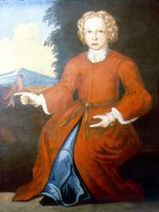

Philip Wendell
 Philip Wendell was born in 1734. He was the twelfth child and youngest son of Albany attorney Evert Wendell and his wife Engeltie Lansing Wendell. Losing his father when Philip was sixteen, the boy would be well provided for in Evert Wendell's will.
For many years, it appeared that Philip might live his life as a bachelor like his much older brother and mentor Abraham E. Wendell. These men lived together following the death of their mother in 1769 in a substantial first ward home - managing and improving the mills and other assets from the estate of their enormously successful father.
Philip Wendell's inheritance included a budding milling complex in the center of a large tract of bottomland along Beaver Creek and some acreage on a family farm on the Normanskill. For a time, he also held land on the north side of the city along Foxes Creek.
He was a well-known if not particularly distinguished member of the Albany community during the third quarter of the eighteenth century. Pewholder at the Albany Dutch church, during the War for Independence he often served as an express rider or courier for the Albany committee. He also seems to have been involved in procuring supplies on behalf of the Revolutionary cause.
Like his brother, Philip was quietly successful in managing extensive properties and a number of slaves as well. By the late 1770s, he was building a new house on upper State Street on a knoll that would have presided over his Albany pastureland and mills.
By 1790, his brother had died and Philip Wendell was alone with five slaves in his Albany house. Five years later, at age sixty-one he married young Sarah Packard. They had six children born between 1796 and 1803. At that time, his occupation was given as a "gentleman." The census in 1800 described his first ward household with two older adults, four young children, another women, and four slaves.
Philip Wendell wrote his will in November 1808. It left the bulk of his estate to Sarah as long as she remained a widow. He died a month later at age seventy-five. He was buried in the Dutch church plot at the new city cemetery. His younger widow survived until 1830.
 The life of Philip Wendell is CAP biography number 2702. This profile is derived chiefly from family and community-based resources. He was sometimes called "Philip E. Wendell" to prevent confusion with other Philip Wendells then living in greater Albany County.
The life of Philip Wendell is CAP biography number 2702. This profile is derived chiefly from family and community-based resources. He was sometimes called "Philip E. Wendell" to prevent confusion with other Philip Wendells then living in greater Albany County.
Portrait of young Philip Wendell by one-time Albany resident John Heaton dated 1737. Collection of the Albany Institute of History and Art.
The history of "Wendell's Mills" will be explored further in the future.
The Dutch church plot was in the new municipal cemetery that opened in 1806 and was located in today's Washington Park.